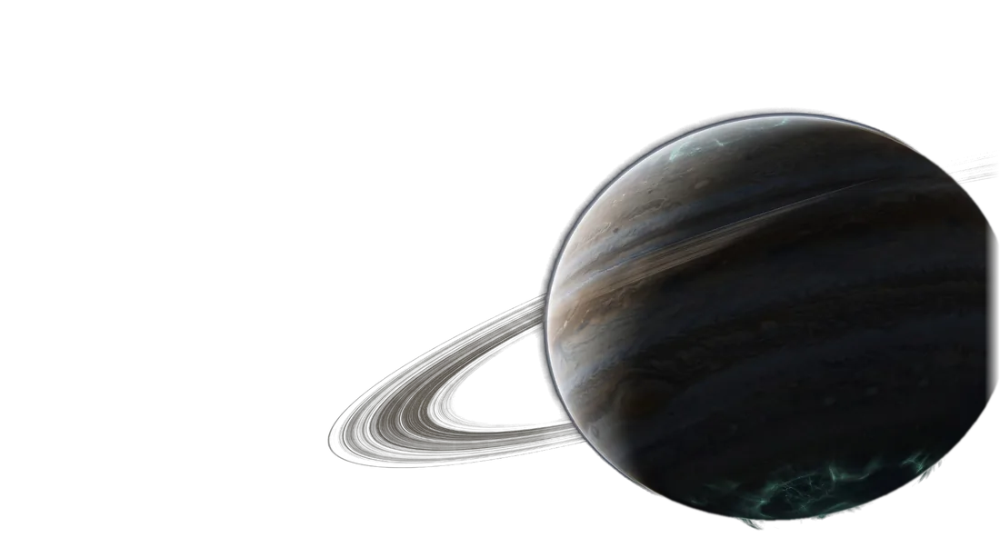

ASTROPOLITY
Шестьдесят лет. Пять империй. Одна галактика, в которой хватит места только одной. Стройте колонии, проектируйте корабли, воруйте чужие технологии и решайте, как закончится эта партия.
Шестьдесят лет на один ответ
Партия идёт с 2200 по 2260 год. За это время техника меняет эпохи, просыпаются пираты, образуются коалиции, а Галактический совет голосует о будущем. Прокрутите — и звёздная дата побежит вместе с вами.
Выберите, кем править
У каждой империи свой лидер, своя доктрина и своя слабость. Остальные четыре достанутся искусственному интеллекту — со своими характерами и долгой памятью на обиды.
Галактика, в которой всё связано
Экономика питает флот, флот защищает форпосты, форпосты держат узлы силы, а узлы силы двигают науку. Здесь нет «пустых» механик.
Пять шагов, которые повторяются всю партию
Галактика непредсказуема
Сломанные зонды, тонущие в разломах корабли, чумные карантины и кристаллические разумы. Каждое событие — выбор с последствиями.
Всё о механиках игры
Числа взяты прямо из кода игры (версия 1.3) и пересобираются вместе с ней: стоимость зданий, характеристики корпусов, дерево из 89 технологий.